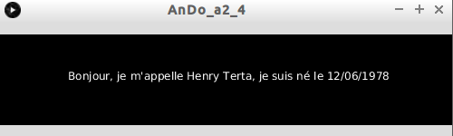
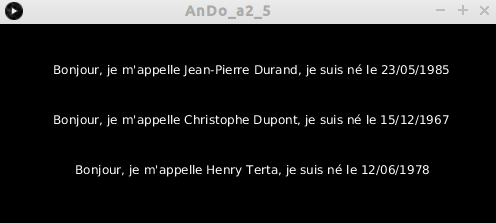
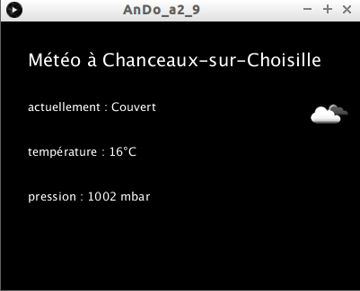

Autre format de données très courant sur le "web", le JSON (JavaScript Object Notation). Comme les "dictionnaires" proposés par Processing, le JSON fonctionne avec un système de paire clé/valeur. Le format JSON, comme son nom l'indique, est dérivé de la notation des objets du langage JavaScript.
Un objet JavaScript est encadré par des accolades :
{cle_1 : val_1, cle_2 : val_2, cle_3 : val_3}
souvent, pour une question de lisibilité, on écriera :
{
cle_1 : val_1,
cle_2 : val_2,
cle_3 : val_3
}
Un fichier au format JSON peut regrouper un grand nombre d'objets :
[{
"nom" : "Durand",
"prenom" : "Jean-Pierre",
"date_naissance" : "23/05/1985"
},
{
"nom" : "Dupont",
"prenom" : "Christophe",
"date_naissance" : "15/12/1967"
},
{
"nom" : "Terta",
"prenom" : "Henry",
"date_naissance" : "12/06/1978"
}]
Ci-dessus, nous avons un tableau contenant des objets (nous utilisons la notation JavaScript : les caractères [ et ] représentent respectivement le début et la fin d'un tableau).
La "valeur" d'une paire "clé/valeur" peut être un tableau :
{
"nom" : "Durand",
"prenom" : "Jean-Pierre",
"date_naissance" : "23/05/1985"
"sport" : ["tennis", "football", "pétanque"]
}
ou même un autre objet :
{
"nom" : "Durand",
"prenom" : "Jean-Pierre",
"date_naissance" : "23/05/1985"
"adresse" : {"num":6, "rue":"impasse du rossignol", "ville":"Nogent-le-Rotrou", "cp":"28400"}
}
Comme vous pouvez le constater, il est possible d'obtenir des structures de données très complexes avec le format JSON.
Pour en savoir plus sur le JSON, vous pouvez lire l'article sur Wikipédia.
Téléchargez le fichier ident.json et ouvrez-le à l'aide d'un éditeur de texte.
Il nous faut d'abord créer un objet de type "JSONArray" puis récupérer les données présentes dans le fichier "ident.json" :
JSONArray json;
json=loadJSONArray("ident.json");
Attention : notre fichier json contient un tableau d'objet (commence par [ et se termine par ], les différents objets sont séparés par des virgules) nous utilisons donc "JSONArray" et "loadJSONArray". Dans le cas où le fichier json serait composé d'un unique objet JavaScript, il faudrait utiliser "JSONObject" et "loadJSONObject".
Le tableau contient 3 objets JavaScript, la méthode "getJSONObject" va nous permettre de récupérer un de ces 3 objets JavaScript. Cette méthode prend un seul paramètre, l'indice de position de l'objet dans le tableau (le premier objet JavaScript à, comme d'habitude, l'indice 0).
Saisissez et testez ce code
JSONArray json;
void setup(){
json=loadJSONArray("ident.json");
JSONObject obj=json.getJSONObject(1);
println(obj);
}
Comme vous pouvez le constater, l'objet s'affiche dans la console de Processing.
Comme avec les données de type CSV, nous allons utiliser les méthodes "getString", "getInt",... pour récupérer la "valeur" associée à une "clé". Les méthodes "getString", "getInt",... prennent un paramètre : la "clé" de la "valeur" recherchée.
Saisissez et testez ce code
JSONArray json;
void setup(){
json=loadJSONArray("ident.json");
JSONObject obj=json.getJSONObject(1);
String nom=obj.getString("nom");
println(nom);
}
Créez un programme permettant d'obtenir ceci :
Il est possible de parcourir le tableau d'objet à l'aide d'une boucle :
Créez un programme permettant d'obtenir ceci (il faudra extraire les données du fichier ident.json et obligatoirement utiliser une boucle).
Pour vous aider : la méthode "size" renvoie le nombre d'objets présents dans un tableau (utilisation : "json.size()").
Il existe beaucoup d'autres méthodes utiles, n'hésitez pas à consulter la documentation officielle.
De nombreux sites web proposent des services basés sur des API (Application Programming Interface). Ces sites sont capables de fournir des données aux formats JSON sur "simple demande". Souvent, ces "demandes" sont effectuées par l'intermédiaire d'une url (si vous avez besoin de vous rafraichir la mémoire à propos de la notion d'url, n'hésitez pas à consulter ce document).
Nous allons illustrer ce propos en utilisant l'API d'un site qui fournit des informations météo au format JSON. Vous trouverez ce site à l'adresse suivante : openweathermap.org/api
Pour profiter de ce service,s il est nécessaire de s'inscrire (http://home.openweathermap.org/users/sign_up) afin de pouvoir récupérer une clé (API key). Notez bien cette clé quelque part, elle vous servira dès que vous voulez accéder au service.
Ouvrez votre navigateur préféré et copier-coller l'url suivante dans la barre d'url du navigateur :
http://api.openweathermap.org/data/2.5/weather?q=bonneville,fr&lang=fr&units=metric&APPID=XXXXXXXXXXXXX
ATTENTION : il faut remplacer les "X" par la clé (API key) que vous aurez obtenue lors de votre inscription.
Au lieu d'obtenir, comme d'habitude, une page web, vous devriez obtenir uniquement quelque chose qui ressemblera à ceci :
{"coord":{"lon":6.41,"lat":46.08},"weather":[{"id":800,"main":"Clear","description":"ensoleillé","icon":"01d"}],"base":"stations","main":{"temp":17.35,"pressure":1016,"humidity":59,"temp_min":16,"temp_max":19},"visibility":10000,"wind":{"speed":2.1,"deg":250},"clouds":{"all":0},"dt":1443975257,"sys":{"type":1,"id":6002,"message":0.0095,"country":"FR","sunrise":1443937016,"sunset":1443978495},"id":3031679,"name":"Bonneville","cod":200}
Comme les données sont réactualisées relativement souvent, vous n'obtiendrez pas la même chose que moi !
Avec une simple url, le site open weather renvoie des informations météo sous forme de données JSON.
Détaillons l'url :
http://api.openweathermap.org/data/2.5/weather
Cette partie de l'url ne changera pas (sauf si vous désirez autre chose que les conditions météo actuelles, à ce moment-là, il faudra remplacer "weather" par autre chose (consulter le site open weather pour plus d'informations)).
?q=bonneville,fr&lang=fr&units=metric&APPID=XXXXXXXXXXXXX
À partir du point d'interrogation, vous devez renseigner les différents paramètres qui permettront à open weather de vous renvoyer les bonnes informations. Ces paramètres sont séparés par le caractère "&".
Il est possible de construire des requêtes beaucoup plus complexes, encore une fois, veuillez consulter le site open weather pour plus d'informations.
Intéressons-nous maintenant aux données JSON renvoyées (nous n'allons pas tout détailler) :
Saisissez, analysez et testez le programme suivant
JSONObject json;
void setup(){
json=loadJSONObject("http://api.openweathermap.org/data/2.5/weather?q=bonneville,fr&lang=fr&units=metric");
JSONArray tabWeather=json.getJSONArray("weather");
JSONObject objWeather=tabWeather.getJSONObject(0);
String desc=objWeather.getString("description");
String ville=json.getString("name");
println(desc+" à "+ville);
}
Vous pouvez constater que la "récupération" des données peut parfois s'avérer complexe. La "clé" "description" n'est pas accessible directement : il faut tout commencer par récupérer le tableau "weather", puis récupérer le premier objet du tableau (il n'y a qu'un seul objet dans ce tableau !) et enfin récupérer la "valeur" associée à la "clé" "description". À chaque étape, il faut bien veiller à utiliser la bonne méthode : "getJSONArray" puis "getJSONObject" et enfin "getString".
Reprenez le programme du "À faire vous-même 2.7" en le modifiant pour obtenir la météo dans la ville de votre choix
Créez un programme permettant d'obtenir quelque chose qui ressemblera à ceci (avec la ville de votre choix) :
Pour vous aider : les icônes dont vous aurez besoin sont téléchargeables ici.